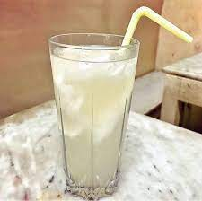
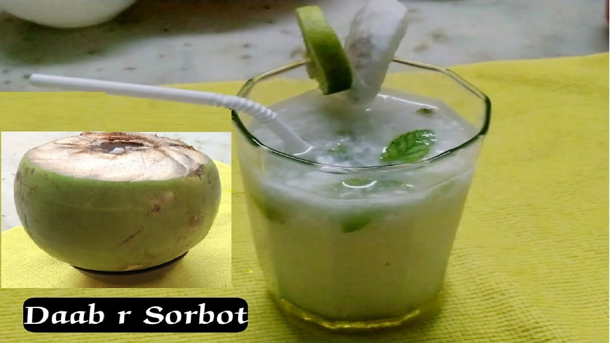
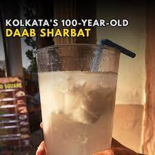

Paramount's Dab Shorbot:
This famous restaurant on College Street is about 100 years old. Nihar Ranjan Majumdar, a liberation warrior,founded Paramount
in 1918 as a front for a revolutionary den, where figures like Netaji Subhash Chandra Bose, Pulin Behari Das, and Satin Sen conducted
covert meetings.

Sharbat was merely a pretext; the real goal was to support the Swadeshi movement.
In addition to political figures, Paramount has welcomed a long range of legends, including Kazi Nazrul Islam, SD Burman, Satyajit Ray,
Uttam Kumar and Suchitra Sen. Have the vanilla sharbat, green mango, chocolate malai, and daab sharbat. Sharbat syrups in bottles can
also be brought home.

The Daab Sharbat is the most recognisable beverage offered here. One of the most popular drinks during the sweltering summer is the
cooling fresh coconut sharbat, which is "made with secret ingredients" and garnished with a handful of fresh and creamy coconut
malai.
Starting at INR 40.